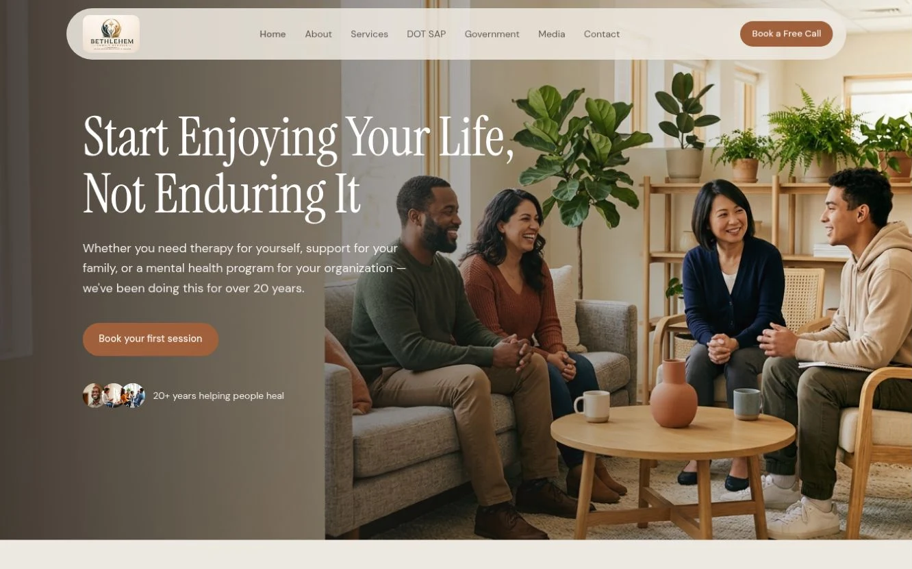
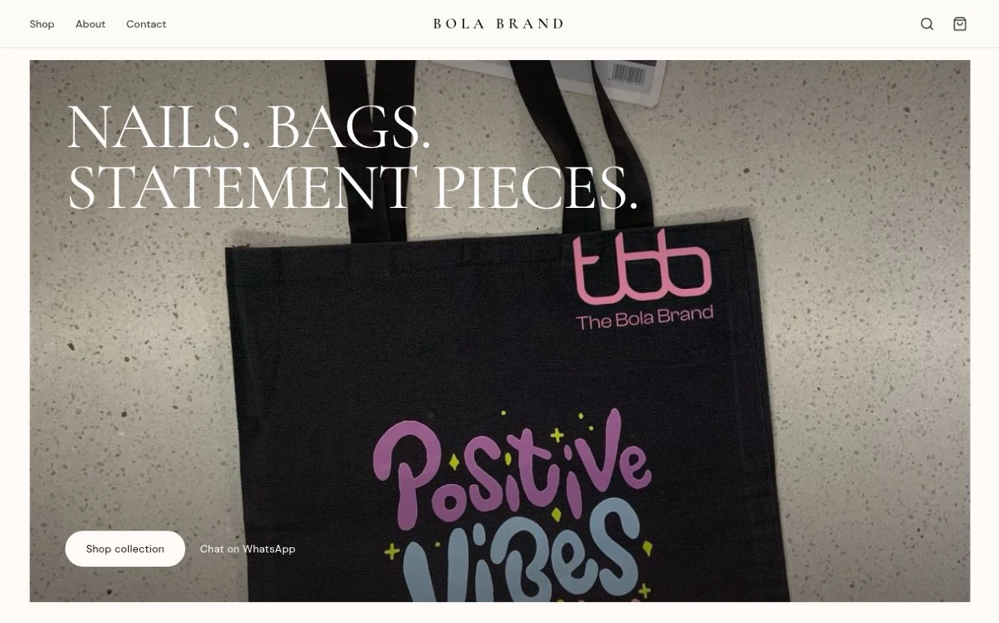
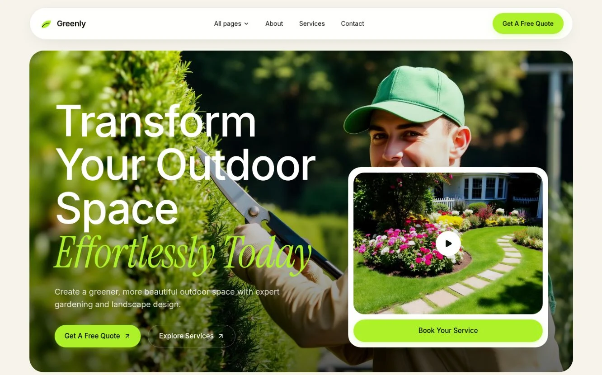
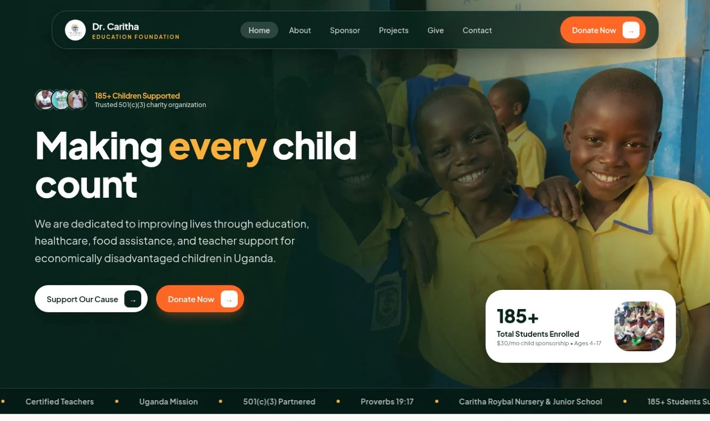
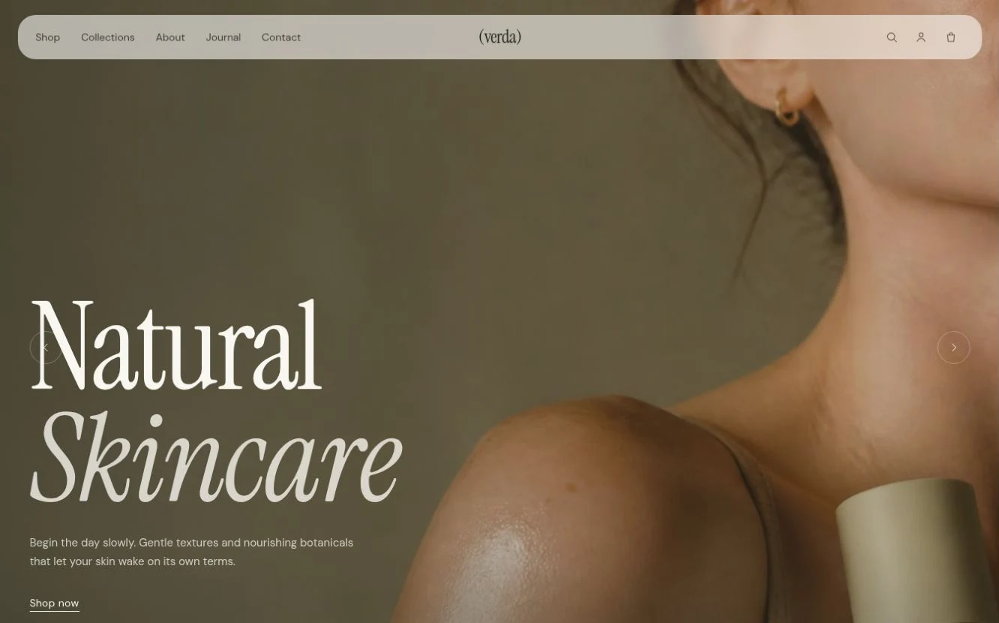

Business websites
A professional home for your services, with a clear story and straightforward ways for people to enquire or book.
Plan your websiteShow people what makes your business different. I design and build websites that feel like your brand—and make the next step clear for your customers.


I’m Afeez Ademola Sule, a website developer and software engineer. I work with businesses, brands and organisations to turn what they do into a clear, welcoming online experience.
That starts with listening: who you serve, what makes you different, and what people should be able to do when they visit your website.
A professional home for your services, with a clear story and straightforward ways for people to enquire or book.
Plan your websiteBring your products into focus with thoughtful collection pages, distinctive visuals, and a buying journey shaped around your business.
Explore your brand website
Give an existing website a fresh start: better mobile usability, faster pages, clearer content structure, and search-friendly foundations.
Review your current websiteNeed your website to do a little more? Booking tools, enquiry follow-up, customer areas, and ongoing website care can be included in your project plan.
Talk it throughExplore websites for healthcare, education, retail and local services. Each preview opens the full website.


Published organisation websites, brand showcases, and the Greenly website recreation. Open project notes for a closer look.
You bring your knowledge of your business. I guide you through the design, development, and decisions along the way.
We talk about your customers, your goals, your current website, and what needs to change.
You get an agreed scope, budget, timeline, and a clear picture of what’s included before work begins.
Your website takes shape, with feedback at agreed checkpoints so the details feel right.
We check the key pages and journeys, launch the website, and cover handover and support.
You don’t need a technical background to get started. Here are a few things you might want to know.
Ask about your projectIt depends on the pages, content, design, and features you need. Share your brief and budget range so I can prepare a relevant proposal. You’ll know what’s included before committing.
Yes. We can review your current website, what you want to keep, and what needs to change. Sometimes focused improvements are enough; other projects need a new design.
Not at all. You bring your knowledge of your business. I’ll explain the choices in plain language and guide you through the content, feedback, and decisions needed.
The design adapts to phones, tablets, and computers. The agreed pages and key journeys are checked before launch.
I can improve page structure, speed, search setup, and how clearly your services are described. Ongoing content and local-search work can be scoped separately. Rankings and traffic are not guaranteed.
Updates, maintenance, and ongoing support can be agreed in your proposal. We’ll be clear about what is covered and how additional work is handled.
A new website, a fresh look, or a clearer way for customers to get in touch—tell me what you have in mind.
info@afeezdev.techHave a project brief or request for proposal? Include the requirements and submission deadline in your email.